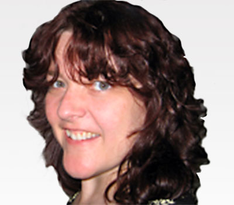
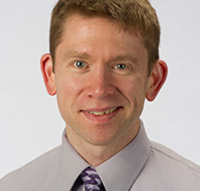

Zheng (John) Wang, Project Director
Associate University Librarian
Digital Access, Resources and Information Technology
Hesburgh Libraries
University of Notre Dame
website | This email address is being protected from spambots. You need JavaScript enabled to view it.
Wang oversees three programs, Information Technology and Discovery Services, Resource Acquisitions and Delivery Services, and Digital initiatives and Scholarship. He provides leadership and guidance and manages vision and strategies in the development and optimization of library core systems, and digital, technical, and delivery services.
As PresQT Project Director, Wang will lead the activities of dedicated project personnel, collaborators and stakeholders. He will convene workshops, engage with stakeholders, and lead authorship effort on the final report/project plan.

Sandra Gesing, PhD
Computational Scientist, Center for Research Computing
Research Assistant Professor, Department of Computer Science and Engineering
University of Notre Dame
website | This email address is being protected from spambots. You need JavaScript enabled to view it.
Gesing's research interests include science gateways, especially for bioinformatic applications and workflows, as well as distributed and parallel computing. In this context, she also works on disease modeling and analysis frameworks for modeling and simulations.
Gesing is responsible for usability aspects of the PresQT project, technical outreach, and authoring of the Technical Project Plan. She will integrate researchers from the beginning of the project, ensuring the application of their input to the design, features and layout of the planning report and resulting platform.

Richard Johnson
Co-Director of Digital Initiatives and Scholarship
Hesburgh Libraries
University of Notre Dame
website | This email address is being protected from spambots. You need JavaScript enabled to view it.
Johnson directs the design and development of the Libraries' data curation and digital library solutions for research, teaching, and learning. These include CurateND, the library’s service to curate, preserve, and spotlight collections and research at Notre Dame. Rick also provides oversight of data management planning services within the libraries, and supports activities in the Center for Digital Scholarship.
In addition to supporting the PresQT Project Director's activities, Johnson will collaborate with Gesing providing input on the tool design, knowledge of library focused data curation technologies, and outreach with repository collaborators.
Natalie Meyers
E-Research Librarian
Hesburgh Libraries
University of Notre Dame
website | This email address is being protected from spambots. You need JavaScript enabled to view it.
Meyers is an e-research librarian in Digital Initiatives and Scholarship at the Hesburgh Libraries where she helps pioneer and provide research data consulting services, including more in-depth data management services in support of grant-funded research, and devotes a significant part of her time as an embedded e-research librarian on grant funded research projects.
Meyers will collaborate with stakeholders at all phases of the project, and ensure project efforts and deliverables are documented and shared ongoingly.